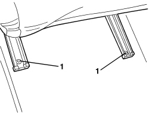
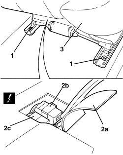
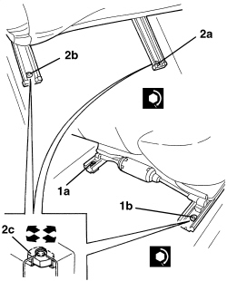

7045A10 FRONT SEAT (ONE), LEFT OR RIGHT - R.R.
- Path
- Procedures > 70 FITTINGS > 7045 FRONT SEATS > 7045A FRONT SEAT ASSEMBLY > 7045A10 FRONT SEAT (ONE), LEFT OR RIGHT - R.R.
- Kind
- repair procedure (removal / refitting; the operation number is the code)
- Applies to
- all engines; all production periods
- Interactive page
- https://sloeber94.github.io/elrnDB-aBrrSpdr/en/#/946002657
Applies to: all engines; all production periods
 Removing
Removing
 Refitting
Refitting- Move the seat to the front end of its travel.
1. Loosen the rear fixing bolts.

Applies to: all engines; all production periods
- Move the seat to the rear end of its travel.
- Partly recline the seat backrest (to facilitate its subsequent removal from the vehicle).
1. Loosen the front fixing bolts.
2. Raise the front of the seat slightly; lift up the edge of the cover (2a) and disconnect the electrical connections (2b, 2c).
Description | Component |
|---|---|
DRIVER'S SEAT COUPLING | |
PASSENGER SEAT COUPLING |
3. Remove the seat from the vehicle.

Applies to: all engines; all production periods
Refitting
Removing- Check that the seat is not damaged.
- Place the seat with the guides in the rear end of travel position.
- Partly recline the seat backrest (to facilitate its subsequent refitting in the vehicle).
- Fit the seat in the vehicle.
- Raise the front of the seat slightly; lift up the edge of the cover and connect the electrical connections.
1. Screw in the front fixing bolts (1a) and (1b) without tightening them.
- Move the seat to the front end of its travel.
2. Screw in the rear fixing bolts (2a) and (2b) without tightening them.
- Check that the seat slides correctly; slide and attach the seat several times and check that the keys are simultaneously attached in both guides.
- Move the seat to the rear end of its travel.
3. Screw in and tighten the inner front fixing bolt (1a).
Component | Fastening | dia | Value (daNm) | Validity |
|---|---|---|---|---|
SEAT GUIDE FASTENING | Bolt | M10x35 | 3.1 ÷ 3.9 |
- Screw in and tighten the outer front fixing bolt (1b).
- Move the seat to the front end of its travel.
Component | Fastening | dia | Value (daNm) | Validity |
|---|---|---|---|---|
SEAT GUIDE FASTENING | Bolt | M10x35 | 3.1 ÷ 3.9 |
4. Screw in and tighten the rear fixing bolts (2a) and (2b).
Component | Fastening | dia | Value (daNm) | Validity |
|---|---|---|---|---|
SEAT GUIDE FASTENING | Bolt | M10x35 | 3.1 ÷ 3.9 |
- Check that the seat slides correctly; slide and attach the seat several times and check that the keys are simultaneously attached in both guides.

Topics linked from this page (2)
Topics that link to this page (60)
- O002 FRONT SEAT BACKREST ANGLE ADJUSTMENT NOT WORKING
- 2125C30 GEAR ENGAGEMENT/SELECTION CABLES - R.R
- 2125C32 GEAR CONTROL LEVER MOUNT - R R
- 2135A10 AUTOMATIC TRANSMISSION MANUAL CONTROL LEVER AND SUPPORT - R + R AND OVERHAUL
- 2135A12 GEAR ENGAGEMENT CABLE - R R
- 2127A70 SUPPORT FOR CONTROL LEVER FOR MANUAL GEARBOX WITH HYDRAULIC SELECTION AND HANDBRAKE - R.R.
- 3350E30 LATERAL ACCELERATION AND SLEWING SENSOR - R.R
- 3380A10 HANDBRAKE LEVER - R+R
- 3380A30 HANDBRAKE CABLE - R+R
- 5010B24 UNDER-FACIA AIR DUCTS - R.R.
- 5010B49 TUNNEL CONSOLE GLOVE COMPARTMENT AIR DUCT - R. R.
- 5010B86 CENTRE CONSOLE COOLING DUCT - R.R.
- 5040C10 AIR CONDITIONING CASING - R.R
- 5040C50 AIR CONDITIONING HEATER RADIATOR - R.R.
- 5040C64 A/C EVAPORATOR - R+R
- 5040C68 CONDENSATE DRAIN PIPE AND ANITI-CONDENSATION FILTER - ARRANGE
- 5040D80 AIR CONDITIONING SYSTEM CABLE LOOM - R.R. OR REPLACE
- 5040D86 AIR CONDITIONING RIGHT AIR MIXTURE FLAP CONTROL MOTOR - R.R
- 5040D94 AIR CONDITIONING LEFT UPPER AIR DISTRIBUTION FLAP MOTOR (DEFROST) - R.R
- 5040D96 AIR CONDITIONING RIGHT UPPER DISTRIBUTION FLAP MOTOR (DEFROST) - R.R
- 5505A68 CABLE LOOM FOR CONSOLE UNDER DASHBOARD AND/OR TUNNEL COVER - R.R. OR REPLACE
- 5505C31 BUILT-IN WIRING UNDER DASHBOARD - R.R.
- 5550D18 HANDBRAKE ON WARNING LIGHT SWITCH - R+R
- 5580C22 AIR BAG MODULE - PASSENGER SIDE - R.R
- 5580C24 PASSENGER SIDE AIR BAG MODULE SUPPORT R. R.
- 5580C44 FRONT SIDE BAG MODULE (ONE) LH OR RH - R.R
- 5580C86 SIDE BAG CABLE LOOM (ONE) LH OR RH - R.R OR REPLACE
- 5580E34 CAR ANTI-THEFT DEVICE ANTI-LIFT SENSOR - R.R. FOLLOWING ELECTRICAL CIRCUIT CHECK
- 5580H12 PARKING OBSTACLE DETECTION DEVICE BUZZER - R.R.
- 7030H14 HOOD - R.R.
- 7030H21 HOOD INNER LINING - R.R.
- 7040A10 DASHBOARD TRIM - R+R
- 7040A89 REINFORCEMENT BRACKET BETWEEN DASHBOARD SUPPORTING CROSSMEMER AND BODYSHELL - R.R.
- 7040L10 PASSENGER COMPARTMENT FLOOR COVERING - R.R.
- 7040L20 TUNNEL COVER - R.R
- 7040L23 TRIM ON TUNNEL COVER - R.R.
- 7040L73 BOTTLE-HOLDER/ASHTRAY IN REAR TUNNEL TRIM - R.R.
- 7040L74 TUNNEL TRIM MOUNTING BRACKET/SUPPORT - R.R.
- 7045A18 FRONT SEAT BACKREST ASSEMBLY (ONE), LEFT OR RIGHT - R.R.
- 7045A36 DRIVER'S SEAT MANUAL HEIGHT ADJUSTMENT DEVICE - R.R
- 7045A42 GUARD (ONE) FOR FRONT SEAT, LEFT OR RIGHT - R.R.
- 7045A43 FRONT SEAT EXTERIOR GUARD (ONE), LEFT OR RIGHT - R.R
- 7045A55 MANUAL DEVICE TO ADJUST FRONT SEAT ANGLE - R.R.
- 7045A64 FRONT SLIDING SEAT POSITION MECHANICAL MEMORY CONTROL CABLE . (ONE), LEFT OR RIGHT - R.R.
- 7045A66 SLIDING GUIDE (ONE),LEFT OR RIGHT FOR FRONT SEAT - R.R.
- 7045B06 GUIDE BUSH FOR FRONT SEAT HEAD RESTRAINT (ONE), LEFT OR RIGHT - R.R.
- 7045D18 FRONT SEAT CUSHION SPRINGING (ONE), LH OR RH - R R
- 7045D20 FRONT SEAT CUSHION COVER, LEFT OR RIGHT - R.R.
- 7045D30 FRONT SEAT BACKREST COVER, LEFT OR RIGHT - R.R.
- 7045J28 FLEXIBLE SHAFT FROM MOTOR TO REDUCTION MECHANISM FOR FRONT SEAT ANGLE ADJUSTMENT (ONE), LEFT OR RIGHT - R.R.
- 7045J30 FRONT SEAT LIFTING MOTOR, LEFT OR RIGHT - R.R. FOLLOWING ELECTRICAL WIRING CHECK
- 7045J31 REDUCTION MECHANISM FOR FRONT SEAT LIFTING MOTOR (ONE), LEFT OR RIGHT - R.R.
- 7045J34 FRONT SEAT BACKREST ANGLE MOTOR, LEFT OR RIGHT - R.R. FOLLOWING ELECTRICAL WIRING CHECK
- 7045J35 REDUCTION MECHANISM FOR FRONT SEAT TILTING MOTOR (ONE), LEFT OR RIGHT - R.R.
- 7045J55 FLEXIBLE SHAFT FROM MOTOR TO REDUCTION MECHANISM FOR FRONT SEAT BACKREST TILTING (ONE), LEFT OR RIGHT - R.R.
- 7045M22 HEATER PAD FOR FRONT SEAT CUSHION, LEFT OR RIGHT - R.R. FOLLOWING ELECTRICAL CIRCUIT CHECK
- 7045M26 FRONT SEAT BACKREST HEATER PAD, LEFT OR RIGHT - R.R. FOLLOWING ELECTRICAL CIRCUIT CHECK
- 7065A14 ANCHORAGE ROD FOR , (ONE), FRONT SEAT BELT LEFT OR RIGHT - R.R.
- 7065A34 PASSENGER PRESENCE SENSOR ON FRONT SEAT FOR INDICATING SEATBELT UNFASTENED R R
- 7210A74 R R FACIA SUPPORT BEAM